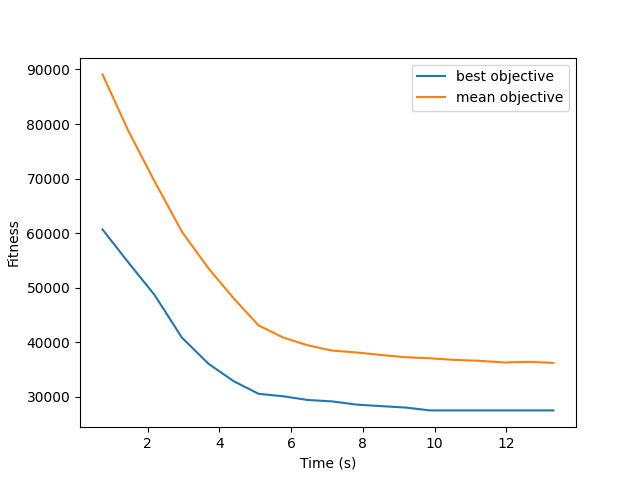
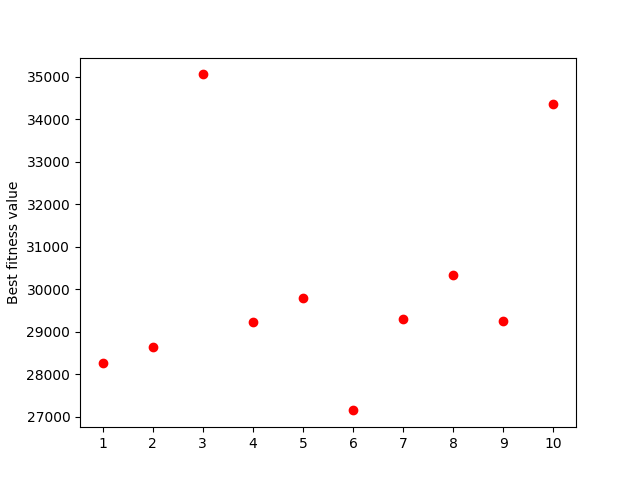

The candidate solutions are represented using the \(\textit{path representation}\) where the cities in the tour are listed in an array in the order they are visited. If city \(\textit{i}\) is the \(\textit{j}th\) element of the array, then city \(\textit{i}\) is the \(\textit{j}th\) city to be visited in the tour. This representation is the most intuitive to understand and seems logical to implement for a first draft of an elementary evolutionary algorithm. In Python, we represent each candidate solution in an array data structure. From left to right determining the order of the tour. The end of the tour, the first element of the array, is implicit and not added to the end of the array.
For a predetermined initial population size \(\lambda\) of 4000 candidates, we use the random.sample function to generate random permutations of tours. The subsequent \(\textit{Selection}\) \(\rightarrow{}\) \(Recombination\) \(\rightarrow{}\) \(Mutation\) \(\rightarrow{}\) \(Elimination\) operations are carried out on this initial candidate population set.
We consider fitness proportion selection and k-tournament selection as our selection operators. Due to the various limitations of the fitness proportion method such as high selective bias for high ranking individuals and uniform selective pressure when the individuals have approximately the same fitness, we implement \(\textit{k-tournament}\) as the selection operator. Briefly described, \(\textit{k}\) candidate solutions are uniformly sampled without replacement from the population, and the individual with the best fitness value is selected. This process is repeated \(\lambda\) times.
An advantage of tournament selection is that it does not require knowledge about the entire population or it’s rank, this is particularly useful when the population size is very large. Given that tournament selection looks at the relative instead of the absolute fitness value, it has the same properties as ranking schemes, i.e., it is invariant to translation and transposition of the fitness function. The parameter \(\textit{k}\) in the algorithm allows to easily control the selective pressure by varying the size of the tournaments (Eiben, Smith, and others (2003)).
One of the flaws of tournament selection is that since \(\lambda\) tournaments are required to produce \(\lambda\) selections, it suffers from the same problems as the roulette wheel algorithm, that is, the outcomes can show a high variance from the theoretical probability distribution (Eiben, Smith, and others (2003)).
The implemented mutation operator is based on a random swap, where two indexes in the solution are selected at random and then swapped. The mutation is applied with probability 1 to each individual in the offspring. If the resulting fitness value from the mutation is higher than the fitness without the mutation, the mutated individual is further kept for the elimination process, otherwise it is the non-mutated individual that further advances to the process of elimination. Considering that the recombination operator \(\textit{PMX}\) already introduces randomness into the offspring by not fully preserving the genetic overlap between both parents, a mutation operator which introduces considerable randomness is not required. The operator does not include a parameter, but it can be extended by swaps between \(\textit{n}\) elements, instead of only two.
Since we are dealing with a permutation representation, our choice of recombination operator was the \(\textit{Partially Mapped Crossover (PMX)}\). \(\textit{PMX}\) can be described in the following steps (according to the definition of Bäck, Fogel, and Michalewicz (2018); Eiben, Smith, and others (2003)):
A limitation of the \(\textit{PMX}\) may be that desirable information from both the parents may not be fully carried over to the offspring, referred to as the property of \(\textit{respect}\) (Radcliffe and others (1991)). This may bring additional randomness into our algorithm but may also destroy potential solutions.
##Elimination operators
To make sure that the best candidate solutions of the current generation are carried out to the next one, the algorithm uses elitism. This is our primary elimination operation where a portion (10%) of the population pool is kept aside at the beginning of each iteration. After the mutations, the top 0.9\(\lambda\) candidates are selected from the new candidate pool and combined with the protected population.
This elitism based elimination operator ensures that the best candidate solution will always be present in the next generation. The parameter to be selected is the \(\textit{elitism rate}\), is set at 10% of \(\lambda\). Since if the elitism rate parameter is too high, there will be less than desired exploration of the search space for generating new candidate solutions.
A good stopping criterion should not interrupt the algorithm before convergence, and at the same time it is conservative enough to stop in a reasonable time lapse. The compromise between the convergence and the time lapse can be measured by the difference of the best fitness value of two consecutive iterations of the algorithm. Our stopping criterion considers that the algorithm converges when the difference between the best fitness value from generation \(\textit{i}\) and from generation \(\textit{i}+1\) is less than 0.0001 for five consecutive times.
There are three parameters to be chosen in the algorithm. The first one is the population size. This parameter \(\lambda\) decides how big our initial population is and how many candidates are considered for each iteration of the main loop of the algorithm. The second parameter is the elitism rate, this is the fraction of the population that is kept from the current generation and carried over to the next one. These tours are selected by taking the best candidates of each batch at the beginning of the iteration. The last parameter of the algorithm is the tournament size. This parameter decides how many candidates are randomly selected to compete in each iteration of the tournament selection.
The parameters are decided manually with respect to the smallest benchmark problem. For each parameter, the algorithm was repeated ten times with different values while the other parameters remained the same. The value with the best objective and lowest mean objective are chosen as the final value for that parameter which is used in the implementation of the algorithm.
The parameter values that generated the best results are as follows:
We ran our algorithm several times on the smallest benchmark problem: \(\textit{tour29}\). Figure 1 shows a convergence graph of one of the generally better outcomes of our algorithm. This simulation needed 13.31 seconds to reach convergence. The algorithm ends with a best objective value of 27510.73. This is not the global optimum, since we have encountered some slightly lower fitness values during the parameter selection phase. As we run the algorithm multiple times, we conclude that there is some variation to the final solution after the algorithm reaches convergence, this is shown in figure Figure 2 in which we ran the algorithm ten times. The problem with the algorithm is that it is not deterministic and it can get stuck in an local optimum. Nevertheless, the average fitness value in which the algorithm usually converges is relatively close to the global optimum.


We suspect our algorithm may suffer from premature convergence, i.e., sometimes the algorithm gets stuck in a sub-optimal local minimum. This could be due to insufficient genetic diversity within the population. Additional exploration operators may be added to improve diversity, which becomes especially relevant when dealing with TSP problems with larger number of cities.
To complement the added diversity, additional local search methods could also be implemented to improve convergence speed and exploit the high ranking candidate neighborhoods. Self-adaptivity for the \(\textit{tournament size}\) parameter can also be included to control the exploration rate as a function of time, e.g., increase the selective pressure as the algorithm moves closer to convergence.
Bäck, Thomas, David B Fogel, and Zbigniew Michalewicz. 2018. Evolutionary Computation 1: Basic Algorithms and Operators. CRC press.
Eiben, Agoston E, James E Smith, and others. 2003. Introduction to Evolutionary Computing. Vol. 53. Springer.
Radcliffe, Nicholas J, and others. 1991. “Forma Analysis and Random Respectful Recombination.” In ICGA, 91:222–29. Citeseer.